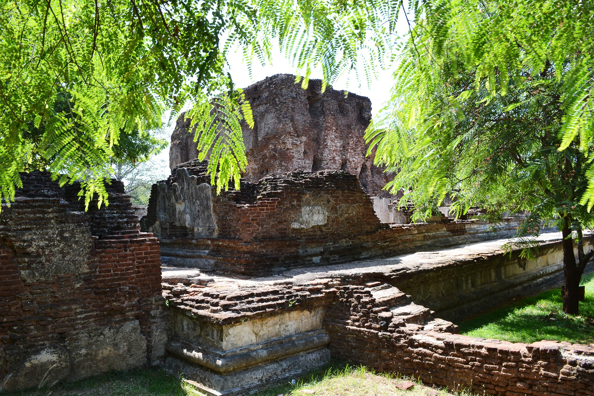

Sri Lanka | Polonnaruwa
Poḷonnaruwa (Sinhala: පොළොන්නරුව, romanized: Poḷonnaruva; Tamil: பொலன்னறுவ, romanized: Polaṉṉaṟuvai) is the main town of Polonnaruwa District in North Central Province, Sri Lanka. Kaduruwela area is the Polonnaruwa New Town and the other part of Polonnaruwa remains as the royal ancient city of the Kingdom of Polonnaruwa.
The second most ancient of Sri Lanka's kingdoms, Polonnaruwa was first established by the Chola dynasty after their successful invasion of the country's then capital, Anuradhapura, in the 10th century. The Ancient City of Polonnaruwa has been declared a World Heritage Site.
Currently the new Polonnaruwa is undergoing a major development project known as the "Awakening of Polonnaruwa" under the concept of former President Maithripala Sirisena. It envisions the development of all sectors in Polonnaruwa including roads, electricity, agriculture, education, health and environment will be developed comprehensively
Area: 3,293 km²
Weather: 34°C, Wind E at 6 km/h, 45% Humidity
Province: North Central Province
Population: 93,118 (2020)